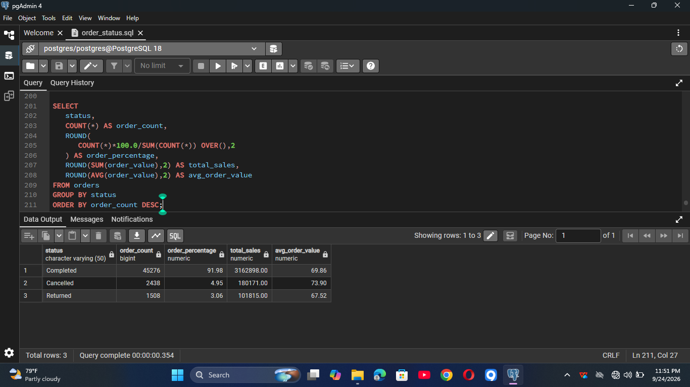
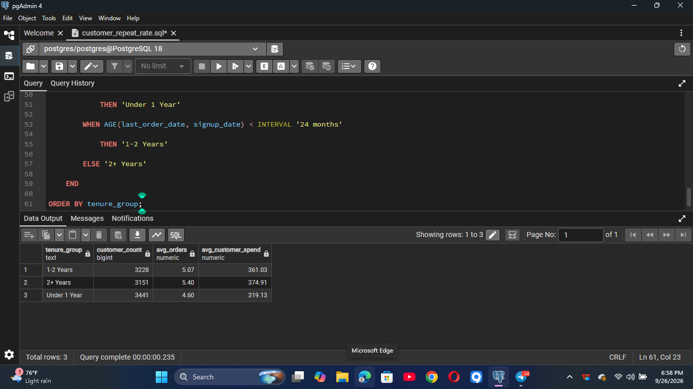
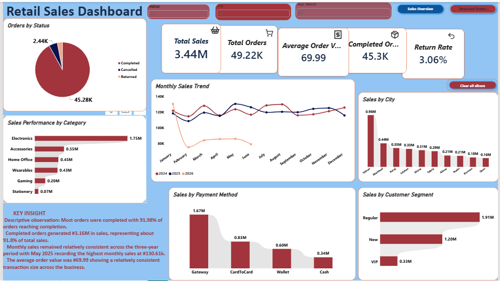
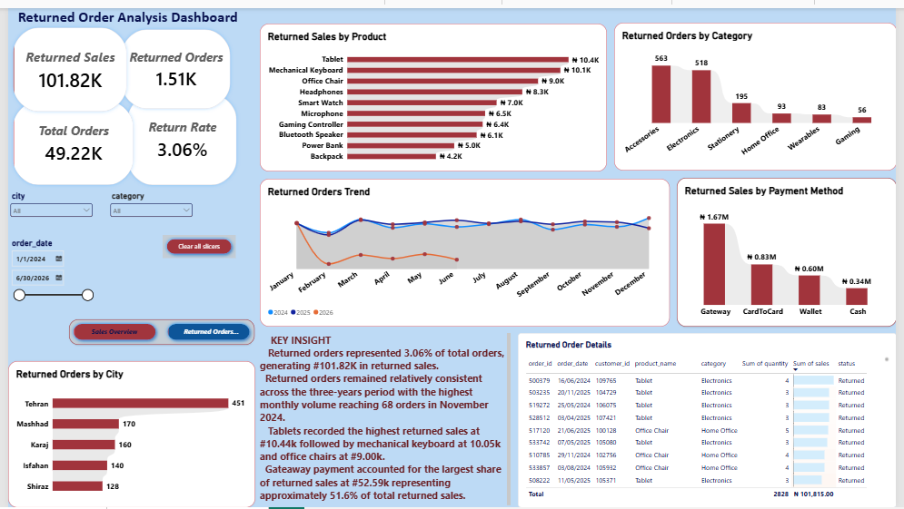

Project Overview
This end-to-end retail analytics project examines sales performance,
order activity, customer behavior, and product returns using a
retail transaction dataset containing 49,222 records.
I used PostgreSQL for data validation and analysis, then used
Power Query and Power BI to prepare the data, create analytical
measures, and develop an interactive dashboard.
Key Metrics
49.22K
Total Orders
₦3.44M
Total Sales
₦69.99
Average Order Value
3.06%
Return Rate
Business Questions
- How much sales revenue was generated?
- How many orders were completed, cancelled, or returned?
- How did sales change over time?
- Which product categories and cities generated the most sales?
- Which payment methods contributed most to sales?
- What products and locations were associated with returned orders?
- How much sales value was associated with returned orders?
Data Preparation & Validation
- Validated 49,222 transaction records.
- Checked for duplicate Order IDs.
- Checked for missing values and data-quality issues.
- Investigated negative and zero-value transactions.
- Retained legitimate transaction adjustments rather than deleting them without investigation.
PostgreSQL Analysis
PostgreSQL was used to validate the dataset and answer key
business questions before visualization.
- Sales and order performance by status.
- Sales performance across years and time periods.
- Customer spending and repeat-customer analysis.
- Category and city performance.
- Payment-method analysis.
- Returned-order analysis.
Order Status Performance
I analyzed order performance by status to compare completed,
cancelled, and returned orders, including their contribution
to total sales.

Customer Tenure & Spending
I analyzed customer tenure to understand how customer longevity
relates to order frequency and average customer spending.
Longer-tenured customers showed higher average order activity
and spending.

Power BI Dashboard
The Power BI report contains two analytical pages:
- Sales Overview — overall sales, orders, trends, categories, cities, payment methods, and customer segments.
- Returned Orders Analysis — return rate, returned sales, return trends, cities, categories, products, payment methods, and order-level details.
Interactive slicers allow users to explore the data by city,
category, order status, and date.
Sales Overview

Returned Orders Analysis

Key Findings
- Completed orders accounted for 91.98% of all orders.
- Completed orders generated approximately ₦3.16M in sales.
- Returned orders represented 3.06% of total orders.
- Returned sales amounted to approximately ₦101.82K.
- Tablets recorded the highest returned sales among the top returned products at approximately ₦10.44K.
- Gateway payments accounted for approximately ₦52.59K of returned sales.
Tools
PostgreSQL
Power BI
Power Query
DAX
← Back to Portfolio